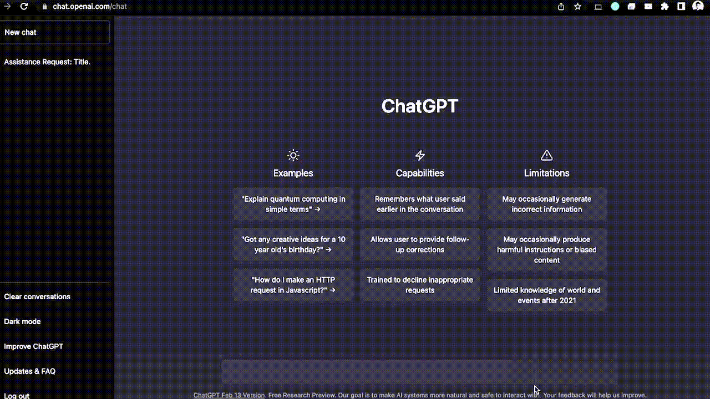

ChatGPT
Introducing ChatGPT, an innovative AI language model created by OpenAI to revolutionize natural language
processing.
Conceived by a team led by Sam Altman and Greg Brockman, ChatGPT is built upon the powerful GPT (Generative
Pre-trained Transformer) architecture.
Its versatility in understanding and generating human-like text has found applications across diverse
fields,
making it a go-to solution for various language-related tasks

- Functionality and Uses: This AI marvel boasts a wide array of applications, serving in natural language
processing tasks such as text completion, language
translation, content summarization, sentiment
analysis, and more.
It's employed in creating chatbots, virtual assistants, language translation services, and content
generation platforms across industries like technology, healthcare, finance, and entertainment.
- Versatility Across Domains: ChatGPT's flexibility and adaptability have made it a sought-after solution in
multiple domains.
It assists in customer service by providing efficient responses, aids content creators
by
suggesting ideas or generating content,
supports educational platforms through language tutoring or
content
summarization, and contributes to research endeavors by
facilitating data analysis and natural language
understanding.
- Global Reach and Impact: Its influence spans across the globe, serving in various capacities wherever
natural language processing is required.
From powering chatbots on customer service websites to enabling
multilingual communication through translation services,
ChatGPT plays a pivotal role in enhancing
human-computer interactions and breaking down
language barriers across diverse cultures and industries
Here is an example how ChatGPT works:-
